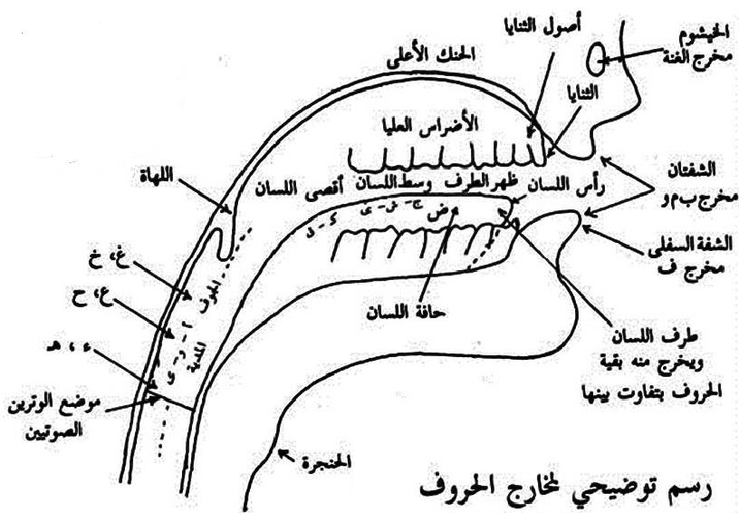

-
مخارج الحروف :- وهي جمع مخرج والمخرج هو محل خروج الحرف أي مكان ظهوره وتميزه عن غيره , ومخارج الحروف سبعة عشر مخرجاً يخرجون من خمسة مواضع تسمي المخارج العامة وهي ( الجوف ــ الحلق ــ اللسان ــ الشفتان ــ الخيشوم ) .
- الجوف :- وهو خلاء الفم مما يلي الحلق وله مخرج واحد تخرج منه ثلاثة حروف هي الألف المدية بعد فتح والواو المديه بعد ضم والياء المديه بعد كسر وتسمي حروف جوفية .
- الحلق :- وله ثلاثة مخارج وهي :-
• أقصي الحلـق أي أبعده :- ويخرج منه حرفان هما الهمزة والهاء .
• وسط الحلق :- ويخرج منه حرفان هما العين والحاء المهملتان .
• أدني الحلـق أي أقربه مما يلي الفم :- ويخرج منه حرفان هما الغين والخاء المنقوطتان .
- اللسان :- وله عشرة مخارج هي :-
• أقصي اللسان من فوقه أي أبعده مما يلي الحلق وما يحاذيه من الحنك الأعلي :- ويخرج منه القاف .
• أقصي اللسان من أسفل :- ويخرج منه الكاف وتسمي القاف والكاف حروف لهوية نسبة إلي اللهاة .
• وسط اللسان بينه وبين وسط الحنك الأعلي :- ويخرج منه ثلاثة حروف هي الجيم والشين والياء اللينة والمتحركة .
• من إحدي حافتي اللسان مع ما يليها من الأضراس من الجهة اليسري أو الجهة اليمني :- ويخرج منه الضاد المنقوطة .
• من أدني اللسان إلي منتهي طرفه مع ما يليها من أصول الثنايا من الحنك الأعلي :- ويخرج منه اللام .
• من طرف اللسان مع ما فوقه من الحنك الأعلي :- ويخرج منه النون المظهرة والمتحركة .
• من طرف اللسان مائلاً إلي الظهر :- يخرج منه حرف الرا .
• من طرف اللسان مع أصول الثنايا العليا مصعداً إلي جهة الحنك الأعلي :- ويخرج منه الطاء والدال والتاء المثناة من فوق .
• من بين طرف اللسان فوق العليا والسفلي :- ويخرج منه الصاد والزاي والسين وتسمي حروف الصفير.
• من طرف اللسان وأطراف الثنايا العليا :- ويخرج من الظاء والذال والثاء .
- الشفتان :- ولهما مخرجان وهما :-
• من بطن الشفة السفلي مع أطراف الثنايا العليا :- ويخرج منهما الفاء .
• ما بين الشفتين :- ويخرج منه الباء والميم والواو الغيرمدية إلا أن الواو بانفتاحهما والباء والميم بانطباقهما .
- الخيشوم :- وله مخرج واحد وهو أقصي الأنف وتخرج منه الغنة .
ملحوظة :- لكي تعرف مخرج أي حرف سكنه وأدخله مع الهمزة مثل ( أَجْ ــ أَدْ ــ أًلْ ــ أًمْ ) .
